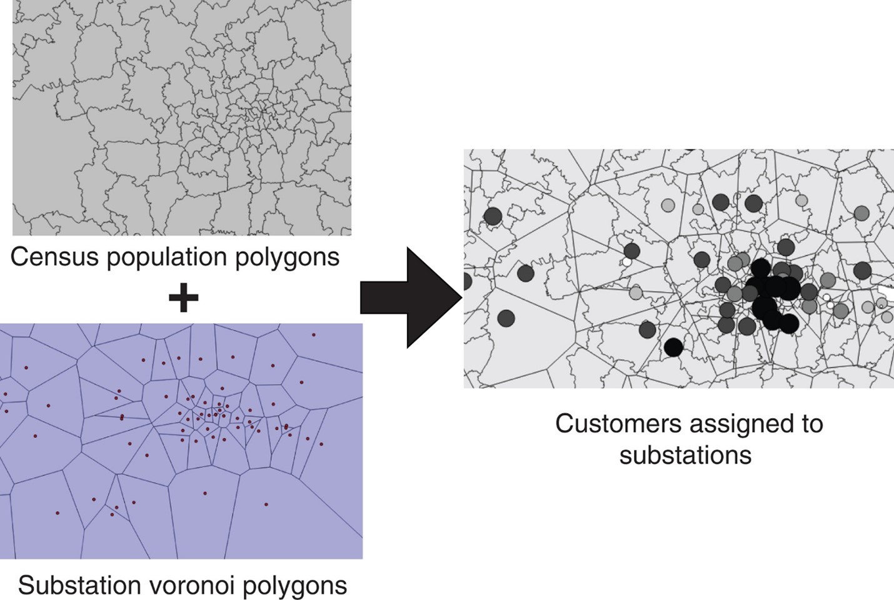
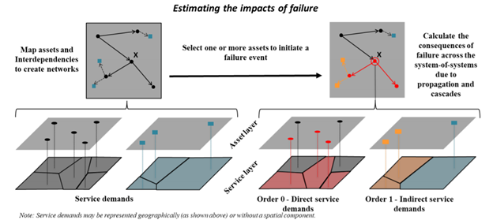
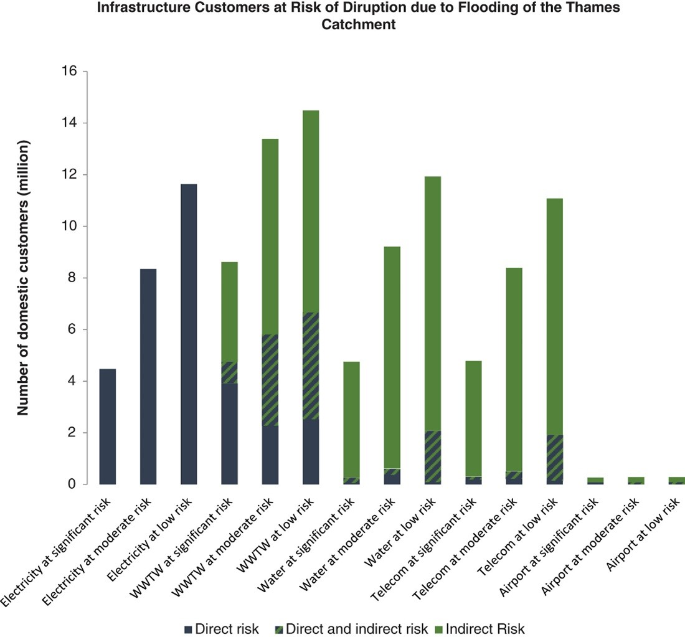

This mini-lecture covers how infrastructure disruptions affect people who are dependent on infrastructure services. A method for calculating the extent of people served by infrastructure assets, and hence exposed to disruptions, at a large scale, is also described.
This mini-lecture explores the extent of infrastructure disruptions in terms of the population affected. A widely used method for estimating the population served for different infrastructure assets is described. This is followed by an overview of how to include the population that is indirectly served by assets via other infrastructure systems. The implications of this for criticality analysis, and hence for guiding adaptation measures, is then briefly discussed. Finally, a case study that puts these concepts into practice to understand the population directly and indirectly affected by flooding in the Thames catchment is explored.
At large scales, data on which infrastructure assets serve which populations is largely unavailable. To overcome this, a technique that involves spatially partitioning the population served by different assets is often employed.
Voronoi polygons involve partitioning a plane with points into polygons such that each polygon contains 1) one ‘generating point’ and 2) points that are closer to its ‘generating point’ than to any other. By drawing Voronoi polygons around each asset, each asset is associated with a region within which all villages and towns will be closer to that asset than to any other.
This process is shown in Figure 11.3.1, with a population layer being overlaid with the Voronoi polygons dedicated to each electricity substation. This ultimately indicates which customers are served by which asset.

Figure 11.3.1: Illustration of how populations can be divided according to Voronoi polygons dedicated to each electricity substation in order to estimate how many customers are served by each asset (Pant et al. 2018)
The previous section shows how Voronoi diagrams can be used to allocate the population served directly by each asset. However, certain assets, such as electricity substations, may serve other types of infrastructure systems as well, such as water.
Figure 11.3.2 shows how the populations that are directly and indirectly served by infrastructure assets can be affected by disruptions. In the top left graph, a network is drawn in black with dependent assets belonging to another sector in blue. Below, the service demands associated with each asset both in the first network (black) and the dependent assets (blue) are identified by drawing Voronoi polygons. The right-hand side of the figure illustrates what would happen in the event of failure at asset X. Because X is connected to other assets in the first network (red), which are in turn connected to two dependent assets of another sector (yellow), the initial failure propagates to 4 more assets. By understanding the extent of the service demand area associated with each, the population disrupted both directly and indirectly by the failure of asset X can be quantified.

Figure 11.3.2: Illustration of how, by allocating the service demand areas/populations served per infrastructure asset, one can estimate the extent of direct and indirect disruptions to customers as a result of asset failure (Pant et al. 2020)
Evidently, the number of people served by the asset X is much lower than the total number of people disrupted, highlighting the importance of understanding the behaviour of infrastructure as an interconnected network or system-of-systems.
The populations served both directly and indirectly by individual assets provides an indication of the population exposed to asset failure, and thus the criticality of different assets.
For example, the criticality of an electricity substation can be calculated by combining:
The number of customers it serves directly (that are potentially exposed to electricity asset failure) by assigning Voronoi polygons to individual electricity substation assets; and
The number of customers that are served by other infrastructure systems supplied by that electricity substation, such as gas, water, wastewater and telecommunications infrastructure.
This metric can be used to guide decision-making by prioritising the most ‘critical’ assets for improvement works.
This was put into practice by (Pant et al. 2018) in the Thames catchment. The number of domestic customers exposed to the direct flood-induced disruption for a range of infrastructures, from electricity to water to telecoms, as well as to asset disruption caused indirectly by flooding as a result on network connections, was calculated.
Figure 11.3.3 shows the result of this work. It is particularly striking to see the additional number of people indirectly exposed to electricity disruptions via water supply, wastewater and telecommunications infrastructure disruptions.

Figure 11.3.3: Number of domestic customers directly and indirectly exposed to the direct flood-induced disruptions for a range of infrastructure sectors in the Thames catchment (Pant et al. 2018)
Disruptions to infrastructure services not only affect people, but also affect various economic activities. This will be explored in the following section.
This mini-lecture discusses the disruptions that infrastructure failures impose on dependent populations. You should now recognise society’s direct and indirect dependence on infrastructure and be able to estimate the number of people that would be affected directly/indirectly by disruptions.